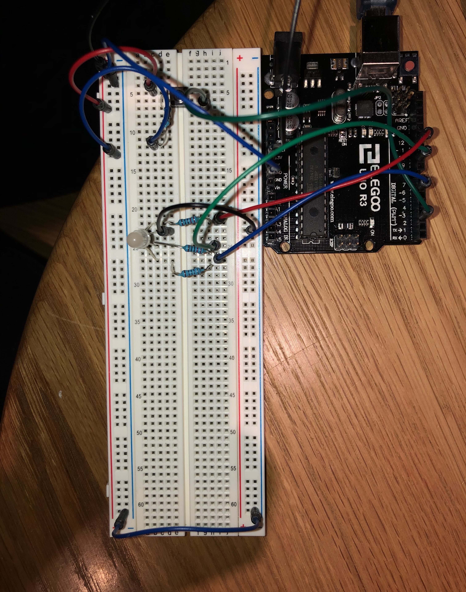
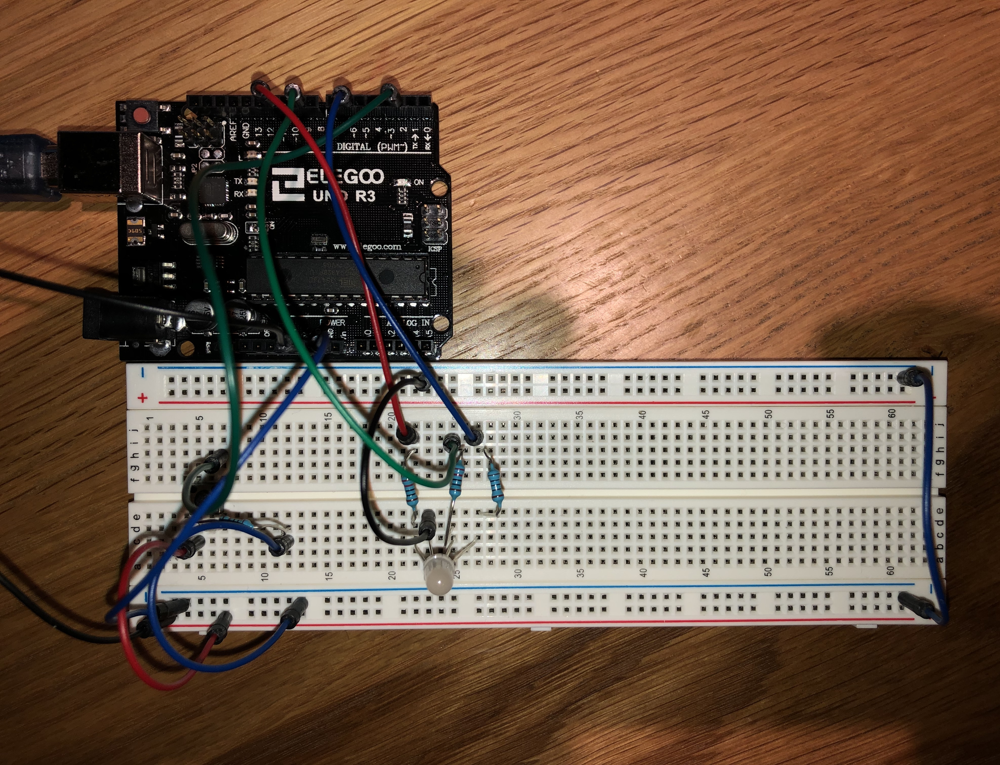
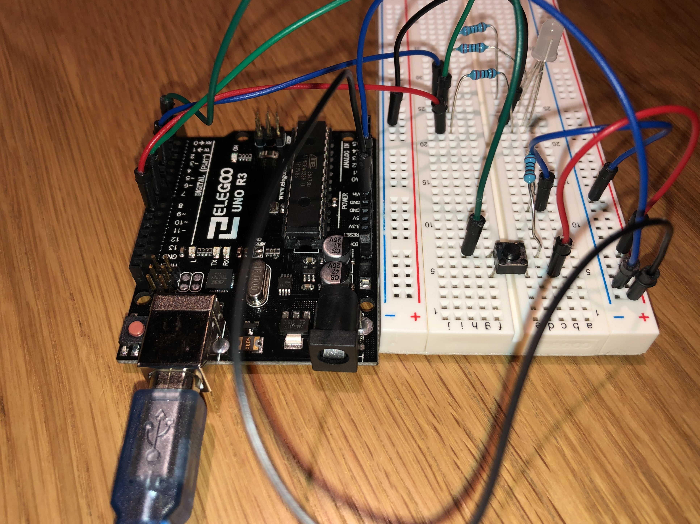
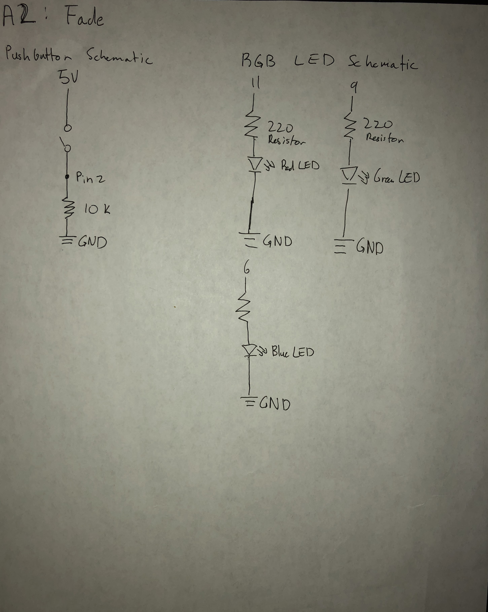

Seung Won's Assignment 2: Fade!

This gif shows the Fade behavior that I exectued using the RGB LED and a pushbutton. Although the gif wasn't able to show the entire sequence, first the LED would flash through three different colors then, when the button is pressed the RGB LED would fade in a sequence of red, green, and finally blue.
To do this I modified two different code snippets shown in class and combined them. One was the pushbutton code and the other was the for loop used to make the LED fade. The entirety of the code is shown below.
// code for the pushCheck and Fade behaviors modified from
// in class examples, found in slidedeck L3: Pin Use.
// constant variables established to set the pin numbers
// used for pin connected to button.
const int buttonPin = 2;
// used to connect pin to red LED
const int redPin = 11;
// used to connect pin to green LED
const int greenPin = 9;
// used to connect pin to blue LED
const int bluePin = 6;
// variable assigned store store the value given by digitalRead
// which will check if the button has been pushed
int pushCheck = 0;
void setup() {
// put your setup code here, to run once:
// initializes the pin for the red LED as an output
pinMode(redPin, OUTPUT);
// initializes the pin for the green LED as an output
pinMode(greenPin, OUTPUT);
// initializes the pin for the blue LED as an output
pinMode(bluePin, OUTPUT);
// initializes the pin for the pushbutton as an input
pinMode(buttonPin, INPUT);
}
void loop() {
// put your main code here, to run repeatedly:
// reads the state of the pushbutton value
pushCheck = digitalRead(buttonPin);
// checks if the button has been pressed, the button has been
// pressed if the pushCheck value is high
if(pushCheck == HIGH) {
// resets the value for the red LED pin to zero
analogWrite(redPin, 0);
// resets the value for the blue LED pin to zero
analogWrite(bluePin, 0);
// resets the value for the green LED pin to zero
analogWrite(greenPin, 0);
// automatically changes the value of the analog write
// from 0 up to 256
for(int i = 0; i < 256;i++){
// sets the value of the red LED pin to the value of i
analogWrite(redPin, i);
// waits for 0.01 seconds
delay(10);
}
// automatically changes the value of the analog write
// from 256 down to 0
for(int i = 256; i >= 0;i--){
// sets the value of the red LED pin to the value of i
analogWrite(redPin, i);
// waits for 0.01 seconds
delay(10);
}
// automatically changes the value of the analog write
// from 0 up to 256
for(int i = 0; i < 256;i++){
// sets the value of the green LED pin to the value of i
analogWrite(greenPin, i);
// waits for 0.01 seconds
delay(10);
}
// automatically changes the value of the analog write
// from 256 down to 0
for(int i = 256; i >= 0;i--){
// sets the value of the green LED pin to the value of i
analogWrite(greenPin, i);
// waits for 0.01 seconds
delay(10);
}
// automatically changes the value of the analog write
// from 0 up to 256
for(int i = 0; i < 256;i++){
// sets the value of the blue LED pin to the value of i
analogWrite(bluePin, i);
// waits for 0.01 seconds
delay(10);
}
// automatically changes the value of the analog write
// from 256 down to 0
for(int i = 256; i >= 0;i--){
// sets the value of the blue LED pin to the value of i
analogWrite(bluePin, i);
// waits for 0.01 seconds
delay(10);
}
} else {
// sets the value of the red LED Pin to 200
analogWrite(redPin, 200);
// sets the value of the green LED Pin to 20
analogWrite(greenPin, 20);
// sets the value of the blue LED Pin to 30
analogWrite(bluePin, 30);
// waits for 0.5 seconds
delay(500);
// sets the value of the red LED Pin to 10
analogWrite(redPin, 10);
// sets the value of the green LED Pin to 200
analogWrite(greenPin, 200);
// sets the value of the blue LED Pin to 10
analogWrite(bluePin, 10);
// waits for 0.5 seconds
delay(500);
// sets the value of the red LED Pin to 20
analogWrite(redPin, 20);
// sets the value of the green LED Pin to 10
analogWrite(greenPin, 10);
// sets the value of the blue LED Pin to 200
analogWrite(bluePin, 200);
// waits for 0.5 seconds
delay(500);
}
}
One change that I made was that I changed the name of the variable that would store the data that checks whether the button was pushed was changed to pushCheck. In addition, I added in the code that would happen during the else, in this case what the LED would do when the button wasn't pushed. With this circuit when the button wasn't pushed it would flash through three colors each of which was a mix of the three colors at different intensities. The last change that I added was that every time the button was pushed I added in a reset where it would zero out the values of all three color elements to make sure it faded into the right colors.
  The three images above help show the circuit in detail. In this case I color coded the each of the wires connected to the pins that would feed into each of the elements of the RGB LED by color. So, the one that would go to the Red element got a red wire, the one that would go to the Green element got a green wire, and finally the wire that would go to the Blue element was blue. Accordingly because some of the LED elements had different voltage drops they got different resistors. Because the red LED and the green LED both have a voltage drop of 1.8 they were given 220 resistors, on the other hand because the blue LED has a voltage drop of 3.3 it was given a 100 resistor. For the pushbotton I put in a 10 k resistor because I read that it was the generic catchall that would be able to safely limit current flow with so many different wires going.
Finally, the image above shows the schematic that I drew for this assignment's circuit. In this case I seperated into two seperate schematics. One is the schematic for the push button. In this schematic we can see that it starts at the 5V pin, which feeds into the pushbutton switch. Then, it goes to the #2 pin and the current flows through the 10 k resistor to end up in ground. The other schematic outlines the circuitry used for the RGB LED, each has the pin it starts at. Then, it leads to the resistors, 220 for red and green and 100 for the blue, then they all flow into the resistor where some voltage is lost, finally it flows to ground.